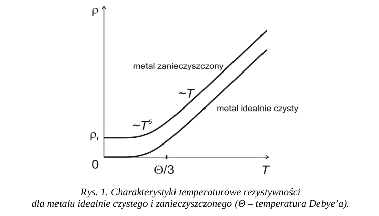

Dobre przewodniki charakteryzują się dużą koncentracją nośników ładunku i ich mobilnością.
Metale i stopy metali mają dużą konduktywność.
Konduktywność elektryczna (γ), inaczej przewodność właściwa, jest miarą tego, jak dobrze materiał przewodzi prąd elektryczny.
Jest odwrotnością rezystywności (γ = 1/ρ).
Im wyższa konduktywność, tym lepiej materiał przewodzi prąd.
Konduktywność zależy od liczby nośników ładunku w materiale i ich ruchliwości.
Rezystywność (ρ) jest miarą tego, jak bardzo materiał przeciwstawia się przepływowi prądu elektrycznego.
Jest odwrotnością konduktywności (ρ = 1/γ).
Im wyższa rezystywność, tym gorzej materiał przewodzi prąd.
Najlepszymi przewodnikami, charakteryzującymi się najniższą rezystywnością, są w kolejności: srebro, miedź, złoto i aluminium.
Najlepsze przewodniki to:
Metale dobrze przewodzą prąd i ciepło, mają połysk, są plastyczne i odporne na uderzenia.
Ich właściwości wynikają z wiązań metalicznych, które umożliwiają swobodny ruch elektronów walencyjnych.
W metalach jest dużo elektronów przewodnictwa, a ich koncentracja nie zależy od temperatury.
Elektrony w metalach zachowują się jak gaz Fermiego i podlegają rozkładowi Fermiego-Diraca oraz zakazowi Pauliego.
Rezystywność metali zależy od rozpraszania elektronów na fononach i defektach sieci krystalicznej.
W niskich temperaturach czyste metale mają niską rezystywność (rezystywność resztkowa).
Wraz ze wzrostem temperatury, rezystywność metali rośnie z powodu rozpraszania na fononach.
Zanieczyszczone metale mają wyższą rezystywność resztkową, niezależną od temperatury.
Rezystywność metali zanieczyszczonych rośnie wraz z temperaturą, ale jest wyższa niż dla metali czystych.
Ruch elektronów w polu elektrycznym jest ograniczany przez zderzenia z fononami (drganiami sieci krystalicznej) i defektami struktury.
Wyższa temperatura zwiększa drgania sieci, co intensyfikuje rozpraszanie elektronów.
Defekty sieci krystalicznej również rozpraszają elektrony.
Przepływ elektronów można porównać do ruchu w lepkim środowisku.
Wraz ze wzrostem temperatury rezystywność metali rośnie.
Temperatura wpływa na przewodność poprzez zmianę średniej drogi swobodnej elektronów.
Rozpraszanie elektronów na fononach (drganiach sieci krystalicznej) zwiększa się wraz z temperaturą.
W niskich temperaturach dominuje rozpraszanie na defektach sieci (rezystywność resztkowa), niezależne od temperatury.
W wyższych temperaturach wzrasta rozpraszanie fononowe, proporcjonalne do temperatury.
Całkowita rezystywność to suma rezystywności resztkowej i fononowej.
W bardzo niskich temperaturach rezystywność rośnie proporcjonalnie do T⁵.
Wykres: 
Temperaturowy współczynnik rezystancji (TWR) to parametr określający, jak bardzo zmienia się rezystancja materiału pod wpływem zmiany temperatury. Wyrażany jest jako względna zmiana rezystancji na jednostkę temperatury, zwykle w kelwinach (1/𝐾) lub stopniach Celsjusza (1/°C).
Wzór dla TWR: α = (1/R₀) * (dR/dT).
Gdzie:
Interpretacja:
Reguła Mathiessena opisuje, jak sumują się różne czynniki wpływające na rezystywność metalu.
Całkowita rezystywność (ρ) jest sumą rezystywności cząstkowych, wynikających z różnych mechanizmów rozpraszania elektronów.
Wzór ogólny: ρ = ρ₁ + ρ₂ + ... + ρₙ, gdzie ρ₁, ρ₂ itd. to rezystywności od poszczególnych mechanizmów rozpraszania.
Dla metali, najczęściej uwzględnia się:
Wzór dla metali: ρ(T) = ρᵣ + ρƒ(T).
Reguła pozwala oddzielnie analizować wpływ temperatury i defektów na przewodność elektryczną materiałów.